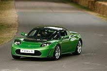

Tesla Motors je izjavila junija 2009, da bodo razvijali tudi majhne kombije in CUV (Crossover Utility Vehicle) na osnovi Modela S. Razvijali bodo tudi tretjo generacijo električnih vozil s kodnim imenom BlueStar z začetno ceno US$30,000. Obstajajo tudi možnosti električnega tovornjaka. Uporabljali bodo nove tipe baterij z večjim dosegom. Začetna cena Roadsterja je bil US$109.000, Modela S precej nižja US$57 400. V prihodnosti nameravajo lansirati US$30.000 vozilo s kodnim imenom BlueStar.